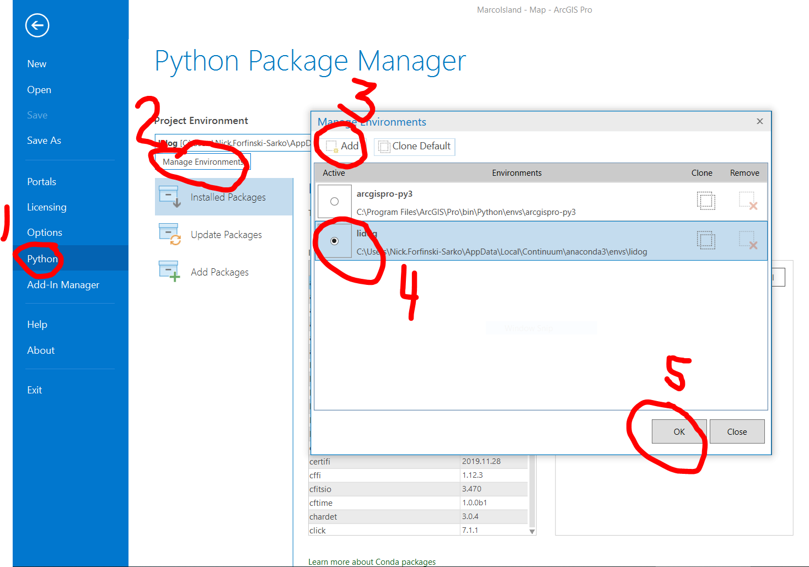

Installation¶
Installing LiDOG consists of two main steps:
Create LiDOG Python Environment
Configure ArcGIS Pro
Create LiDOG Python Environment¶
LiDOG relies on a modified clone of the default ArcGIS PRO Python environment. In addition to the default packages, the LiDOG Python environment includes the following packages:
Package Name |
Description |
|---|---|
rasterio |
provides functionality to work with rasters |
shapely |
provides functionality to work with vector geometric objects |
pyproj |
interface to PROJ (projections and coordinate transformations library) |
Creating the LiDOG Python environment consists of two step:
clone default ArcGIS Pro Python environment
install 3rd-party packes
Clone default ArcGIS Pro Python environment¶
Clone the default ArcGIS Pro Python environment by issueing the following command at an Ananconda prompt (be sure to replace <user> with your user directory name):
(base)> conda create --clone 'C:\Program Files\ArcGIS\Pro\bin\Python\envs\arcgispro-py3' --prefix C:\\users\\<user>\\AppData\\Local\\Continuum\\anaconda3
Note
LiDOG assumes that <lidog_env_path> is C:\users\<user>\AppData\Local\Continuum\anaconda3. If you want to clone the ArcGIS Python environment to another location, you will need to update the conda_dir path in the set_env_vars function in the script file (LiDOG.py).
Install 3rd-party packages¶
Once you clone the default ArcGIS Pro Python environment, first activate the newly created LiDOG Python environment by issuing the following command at the Ananconda prompt:
(base)> activate LiDOG
Once the LiDOG environment is activated, install the additional, 3rd-party packages by issuing the following command:
(LiDOG)> conda install -c conda-forge rasterio shapely pyproj
Note
Using 3rd-party packages was not necessary, as ArcGIS Pro natively provides similar functionality with arcpy and other ESRI Python packages included in the default Python environment, but using 3rd-party packages provided for considerable speed gains in certain cases. For example, using the rasterio.mask for “clipping” a raster took ~ 1/3 of the time of the native arcpy.Clip_management() function.
Configure ArcGIS Pro¶
Once the LiDOG Python environment is created, point ArcGIS Pro to it, as shown below:
